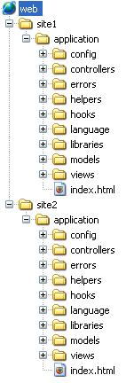
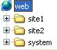
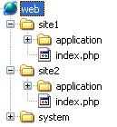
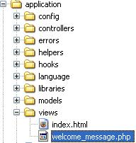

Múltiplos Sites Com CodeIgniter – Exemplo Prático
Devido a muita procura do post sobre a restruturação do CodeIgniter para trabalhar com múltiplos sites (Múltiplos sites com CodeIgniter), fiz um passo a passo aqui da estrutura para o pessoal entender melhor.
Estava recebendo muitas dúvidas, vamos ver se com este exemplo consigo deixar as coisas mais claras para todos.
Começando do zero.
Baixei a última versão do CodeIgniter.
Descompacto ela no meu desktop.
Dentro dessa pasta veio o system, o user_guide, o index.php e o license.txt.
Costumo deletar o User_guide, pois uso a documentação online.
Atenção agora !
Dentro da pasta system temos a pasta application. É esta pasta que faz o seu site funcionar. Com esta informação em mente vamos em frente.
Para começar a trabalhar com o servidor. Começe criando uma pasta para cada site. Como exemplo site1 e site2.

O que o site vai precisar para funcionar ? Sim, como vimos acima é a pasta application. Dentro da pasta de cada site vamos precisar de uma application.

A pasta application, claro, deve ir com a estrutura que vem por padrão nela, como você deve ter reparado na imagem acima.
Agora que já temos o local dos sites prontos, precisamos do que faz o Codeigniter funcionar, que é todo o restante da pasta system. Essa pasta deve estar no mesmo nível dos seus sites.

Ok. Quase lá.
Agora, sabe aquele index.php que veio quando descompactamos o codeIgniter ? Como digo no outro post, é ele quem indica o caminho da pasta application do seu site, e também do core do codeIgniter. Logo, vamos precisar de um deles para cada site.

Agora precisamos editar esse arquivo index.php. Vamos começar pelo do site1.
Procure pela linha
$system_folder = "system"
Esta variável indica aonde está o core do seu sistema, a pasta system.
No nosso caso ela está um nível acima, então basta mudar para
$system_folder = "../system"
Logo na sequência você deve ver a linha
$application_folder = "application"
Essa é a variável que indica onde está a pasta application desse site (lembrando…estamos alterando o site1). O caminho está correto, então, mantemos assim.
Faça o mesmo para o site2, indicando onde está o core do codeIgniter(pasta system) e a pasta application.
Está feito!
Agora, apenas para ficar mais explícito, vamos alterar a view de cada site.
Dentro de Application > views, temos o arquivo welcome_message.php.

Dentro desse arquivo, vem a mensagem padrão de boas vindas do codeIgniter. Na do site1 tirei tudo que havia (ctrl + a – del) e coloquei apenas o título
<h1>::: SITE 1 :::</h1>
e na do site2 apenas o título
<h1>::: SITE 2 :::</h1>
Agora basta acessar as pastas para conferir o resultado.
Para detalhes mais técnicos desse step by step, confira o antigo post.
Ainda com dúvida ? Faça aqui o download dos arquivos.
Caso ainda tenha sobrado dúvidas…entre em contato.
Abraços !!!